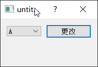

防止同一信号多次触发-使用disconnect()函数
QObject::disconnect()函数使用,以及个人发现的小问题
当界面交互过于复杂，又无法该需求时，有时会出现一个操作使某个控件多次触发同一信号，导致同一信号槽多次执行，不仅影响程序运行效率，有时还会导致逻辑错误。该问题可以通过QObject::disconnect()解决-在需要的时候暂时关闭某一信号连接，处理完后再重新连接。
Disconnects signal in object sender from method in object receiver. Returns true if the connection is successfully broken; otherwise returns false.
A signal-slot connection is removed when either of the objects involved are destroyed.
Disconnect everything connected to an object’s signals (断开与
myObject的信号与其他对象间的连接):disconnect(myObject, nullptr, nullptr, nullptr);
equivalent to the non-static overloaded function
myObject->disconnect();Disconnect everything connected to a specific signal(断开与
myObject的mySignal()信号与其他对象间的连接):
disconnect(myObject, SIGNAL(mySignal()), nullptr, nullptr);
equivalent to the non-static overloaded function
myObject->disconnect(SIGNAL(mySignal()));Disconnect a specific receiver(断开
myObject与myReceiver对象间的连接):
disconnect(myObject, nullptr, myReceiver, nullptr);
equivalent to the non-static overloaded function
myObject->disconnect(myReceiver);
nullptr可以用作通配符，分别表示“任何信号”、“任何接收对象”或“接收对象中的任何槽”。
发送者可能永远不会是nullptr。 (不能在一个调用中断开来自多个对象的信号。)
如果信号为nullptr，它断开接收器和方法与任何信号的连接。 如果不是，则只断开指定的信号。
如果接收器是nullptr，它断开任何连接到信号。 如果不是，则接收端以外的对象的槽不会断开。
如果方法是nullptr，它会断开任何连接到接收器的连接。 如果不是，只有命名为method的槽将被断开，而所有其他槽将被保留。 如果没有接收方，该方法必须为nullptr，因此不能断开所有对象上指定名称的槽位。
QCombobox为例

点击更改按钮后会重置comboBox_中的内容，此时会触发两次&QComboBox::currentIndexChanged信号，分别为comboBox_->clear();和setData()--->comboBox_->addItems;。为避免多次触发该信号，可以在comboBox_->clear();前后分别disconnect()和connect(),代码如下所示：
测试环境VS2022 + Qt5.15.2
1 | |
第36-45行代码每次测试一行，注释掉其中两行。
| 条件（注释号） | b | count_ |
|---|---|---|
| 4、7、8 | true | 1 |
| 1、2、3、5、6 | false | 2、3、4、5、6、7 |
由上可得：
- 是否
disconnect()成功可以通过其返回值确定。 - 多次
connect()会执行多次槽函数。 connect()时候有无receiver也会影响是否disconnect()成功
blockSignals（摘自刘典武经验）
先调用 blockSignals(true) 阻塞信号，处理号以后再调用 blockSignals(false) 恢复所有信号。
如果需要指定某个信号进行断开那就只能用 disconnect 来处理。
本博客所有文章除特别声明外，均采用 CC BY-SA 4.0 协议 ，转载请注明出处！